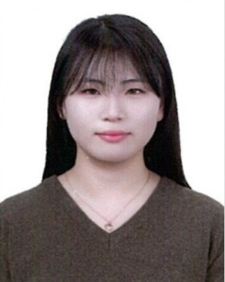

자기 소개
안녕하세요, 저는 꾸준한 책임감을 기반으로 더욱더 성장하는 프로그래머 1학년 서아란입니다.저는 특히 사용자 중심의 편리하고 직관적인 웹 페이지를 설계하고 구축하는데 큰 흥미를 느끼고 있습니다.그래서 저는 프론트엔드 개발자로 성장하기 위해 HTML과 CSS, 그리고 JavaScript를 공부 하고 있습니다. 광주소프트웨어에 입학한 후 친구들과 협업하여 실무적인 경험을 많이 쌓기 위해 프로젝트도 열심히 준비 하고 있습니다.나중에 꼭 프론트엔드 개발자가 되어 사람들에게 도움을 줄 수 있는 웹을 만드는 것이 저의 목표입니다.
